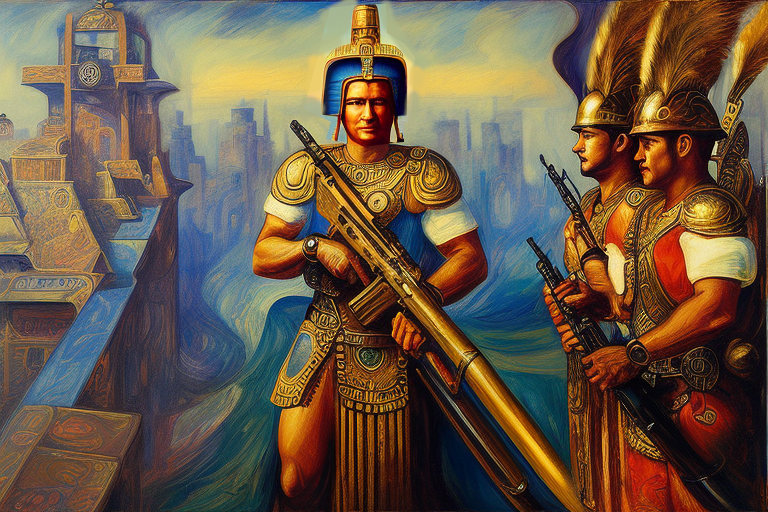

Ο Λούης Καλασπό και ο Νέα Χώρα των μαλακών σφαιρών
Αρχική Σελίδα
Πίνακας Περιεχομένων
Εξερευνώντας το Νεο Κόσμο

¡Χόστια αμίγκος! Είναι η ιστορία του Λούις Καλάσπο, ενός σκληρού και αδυσώπητου όμπρε που ξεκίνησε να κατακτήσει τον νέο κόσμο. Ήταν το έτος του Κυρίου μας, 1632 όταν ο Λουίς Καλάσπο πάτησε το πόδι του στις ακτές του Νέου Κόσμου. Ήταν ένας γενναίος άνθρωπος, γεμάτος περιέργεια και δίψα για περιπέτεια. Στον αέρα ευωδίαζε η γλυκιά μυρωδιά των τροπικών λουλουδιών και οι κραυγές εξωτικών πουλιών.
Καθώς ταξίδευε σε αυτή την παράξενη και άγνωστη γη, ανακάλυψε κάτι απίστευτο. Ήταν η χώρα των μαλακών σφαιρών, όπου οι ιθαγενείς φυλές πυροβολούσαν τους εχθρούς τους με ένα όπλο που φαινόταν σχεδόν μαγικό.
Σαμάρωσε το έμπιστο άλογο του, έναν μαύρο ίππο με μια άσπρη φλόγα στο μέτωπό του, και ξεχύθηκε στις ερημιές του νέου κόσμου. Τελικά, μετά από εβδομάδες ιππασίας, ο Λούης βρέθηκε σε μια κοιλάδα εντελώς άγνωστη σε αυτόν. Το γρασίδι ήταν πράσινο και φωτεινό, τα δέντρα υψωνόταν ψηλά στον ουρανό, και τα ζώα…ω, τα ζώα! Ζούσαν πλάσματα πρωτάκουστα στον Καλάσπος. Υπήρχαν γιγάντιοι βραδύποδες με αιχμηρά νύχια σαν ξυράφι, άγριοι τζάγκουαρ με δόντια μακριά ως τον πήχη ενός ανθρώπου και κοπάδια από παράξενα, κερασφόρα θηρία που τριγυρνούσαν στον πυθμένα της κοιλάδας.
Ο Λούης θαύμασε με αυτή την ανακάλυψη και σύντομα συνειδητοποίησε ότι ανακάλυψε μια χώρα με αμύθητα πλούτη. Αλλά ήταν οι μαλακές σφαίρες που του κέντρισαν το ενδιαφέρον. Ήταν παντού κάτω, απλωμένες σε σωρούς στο έδαφος. Στρογγυλές και λείες, και όταν σήκωσε μία, μετά βίας την ένιωθε στο χέρι του. Παρακολουθούσε καθώς οι ιθαγενείς φυλές κυνηγούσαν και υπερασπίζονταν τα εδάφη τους με αυτά τα περίεργα όπλα. Αναρωτήθηκε από τι ήταν φτιαγμένα και πώς λειτουργούσαν.
Οι Αζτέκοι πολεμιστές

Ο Λούις Καλασπό συνέχιζε το ταξίδι του στη χώρα των μαλακών σφαιρών, και ήξερε ότι ανακάλυψε φλέβα χρυσού. Άρχισε να μαζεύει τις μαλακές σφαίρες με τη χούφτα, γεμίζοντας τις σακούλες και τις τσέπες του. Θα γινόταν πλούσιος πέρα από κάθε φαντασία.
Καθώς όμως γέμιζε τις τσέπες του, ο Λούης άκουσε έναν ήχο που έκανε το αίμα του να παγώσει. Ήταν ο ήχος μιας από τις ιθαγενείς φυλές που εκτόξευε τις μαλακές σφαίρες από κάπου μέσα στα δέντρα. Ο Λούης επιχείρησε να τραβήξει το περίστροφό του, αλλά ήταν άφαντο. Πρέπει να έπεσε όταν μάζευε τις μαλακές σφαίρες.
Οι ιθαγενείς ήταν άγριοι και εκφοβιστικοί και δεν φέρονταν με καλοσύνη στους ξένους. Καθώς περιηγούταν εν μέσω του πυκνού δάσους, ο Λούης άκουσε τις τυμπανοκρουσίες από μακριά. Προέτρεψε το άλογό του να καλπάσει προς εκεί, ανυπόμονος να δει ποια φυλή κροτούσε δυνατά. Αλλά καθώς πλησίαζε, κατάλαβε ότι είχε κάνει ένα τρομερό λάθος. Τα τύμπανα ήταν μια προειδοποίηση, ένα σήμα προς τη φυλή ότι πλησίαζε ένας ξένος.
Πριν προλάβει να αντιδράσει ο Λούης, περικυκλώθηκε από μια ομάδα πολεμιστών. Ήταν οπλισμένοι με σφαιροβόλα τόξα και και δεν είχαν σκοπό να τον αφήσουν να φύγει. Στην αρχή, ο Λούης ήταν προσεκτικός αλλά με σεβασμό καθώς πλησίαζε την φυλή. Ήρθε με δώρα από χάντρες και μπιχλιμπίδια, ελπίζοντας να δημιουργήσει μια ειρηνική σχέση μαζί τους. Καθώς όμως πλησίαζε, οι πολεμιστές της φυλής άρχισαν να βγάζουν τα όπλα.
Ο Λούης προσπάθησε να αντεπιτεθεί, αλλά οι ιθαγενείς υπεραριθμούσαν. Σφαίρες εκτοξέυθηκαν καταπάνω του, χτυπούσαν τα ρούχα του αλλά αναπηδούσαν ακινδύνως. Ο Λούης συνειδητοποίησε με έκπληξη ότι αυτές ήταν οι μαλακές σφαίρες για τις οποίες είχε ακούσει και ήταν ευγνώμων για τις προστατευτικές ιδιότητες του χοντρού δερμάτινου παλτού του. Οι άνδρες της φυλής πυροβόλησαν ξανά και ξανά, αλλά οι σφαίρες απλώς αναπηδούσαν πάνω του και έπεφταν στο έδαφος.
Γρήγορα συνειδητοποίησε ότι το μυστικό της αναποτελεσματικότητας των μαλακών σφαίρων βρισκόταν στα ισπανικά ρούχα. Το χοντρό ύφασμα των ενδυμάτων του ήταν αδιαπέραστο σε αυτά τα παράξενα όπλα. Τότε ήταν που ο Λούης ήξερε ότι έπρεπε να μάθει περισσότερα για την πηγή αυτής της δύναμης.
Καθώς η φυλή συνέχιζε να εκτοξεύει τις μαλακές σφαίρες της, ο Λούης προσπάθησε να επικοινωνήσει μαζί τους, αλλά το γλωσσικό εμπόδιο αποδείχτηκε σημαντικό εμπόδιο. Έπρεπε να βρει άλλο τρόπο να ανακαλύψει το μυστικό πίσω από τις μαλακές σφαίρες.
Ξαφνικά, του ήρθε μια ιδέα. Έβγαλε το παλτό του και το έδωσε σε έναν από τους άνδρες της φυλής. Τους έκανε σήμα να πυροβολήσουν ξανά εναντίον του και αυτή τη φορά, οι μαλακές σφαίρες τον χτύπησαν κατευθείαν στο ακάλυπτο δέρμα του. Προς έκπληξή του, δεν ένιωσε παρά ένα ελαφρύ τσούξιμο.
Όταν εξέταζε τις σφαίρες που είχαν πέσει στο έδαφος, συνειδητοποίησε ότι ήταν κατασκευασμένες από ένα περίεργο υλικό. Δεν έμοιαζε με οτιδήποτε είχε δει ποτέ πριν, μια μαλακή και εύπλαστη ουσία που φαινόταν να αψηφά τους νόμους της φυσικής.
Ο Ποταμός ταχύπηκτου ρευστού

Καθώς διέσχιζε την πυκνή ζούγκλα, ένιωσε μια ξαφνική ανατριχίλα. Σήκωσε το βλέμμα του και παρατήρησε τον ουρανό να σκοτεινιάζει, σαν να πλησίαζε καταιγίδα. Δεν υπήρχαν σύννεφα όμως στον ουρανό. Τότε άκουσε τον ήχο ορμητικού υγρού και κατάλαβε ότι έπεσε πάνω σε κάτι απίστευτο. Όταν πλησίασε λίγο πιο κοντά, συνάντησε ένα ποτάμι από υγρό αντίτμησης.
Ο Λούης Καλάσπος στεκόταν στην άκρη του ποταμού, κοιτάζοντας το δροσερό, παχύρρευστο υγρό που κυλούσε μπροστά του. Είχε ακούσει φήμες για αυτό το μυστηριώδες υγρό από τις ιθαγενείς φυλές, αλλά ποτέ δεν το αντίκρυσε με τα ίδια του τα μάτια.
Με προσοχή, κατέβηκε από το άλογό του, πλησίασε το ποτάμι, βυθίζοντας ένα δάχτυλο στο υγρό και ένιωσε το δροσερό υγρό να καλύπτει το δέρμα του. Έπειτα βύθισε τα ρούχα του στο ποτάμι και βγήκαν εμποτισμένα και γυαλιστερά από το υγρό αντίτμησης. Ένιωθε το βάρος του υγρού στα ρούχα του, αλλά εξακολουθούσαν να αισθάνονται ελαστικά και εύκαμπτα.
Ο Λούης αποφάσισε να δοκιμάσει το υγρό. Έδωσε σήμα στους ιθαγενείς της φυλής να πυροβολήσουν ξανά εναντίον του και αυτή τη φορά, οι μαλακές σφαίρες χτύπησαν τα ρούχα του. Αναπήδησαν στα ρούχα του όπως προηγουμένως, αλλά αυτή τη φορά δεν έπεσαν στο έδαφος.
Αντίθετα, προσγειώθηκαν στο εμποτισμένο ύφασμα και έμοιαζαν να λιώνουν στο υλικό. Οι μαλακές σφαίρες έχασαν το σχήμα τους και έγιναν άμορφες σταγόνες, που δεν μπορούσαν να διαπεράσουν τα ρούχα.
Ο Λούης είχε ανακαλύψει το μυστικό του υγρού αντίτμησης. Οι μοναδικές του ιδιότητες του επέτρεψαν να διαταράξει τη δομή των μαλακών σφαιρών, καθιστώντας τις αναποτελεσματικές έναντι των ισπανικών ενδυμάτων.
Η επίθεση του αλιγάτορα

Ο Λούης Καλάσπο ταξίδευε κατά μήκος του ποταμού, με τα ρούχα του να στάζαν ακόμα απο το υγρό αντίτμησης και θαύμαζε την ομορφιά του τοπίου, όταν ξαφνικά άκουσε έναν παφλασμό. Γύρισε και είδε έναν αλιγάτορα να γλιστράει απο το νερό, με τα μάτια του καρφωμένα πάνω του.
Άπλωσε ενστικτωδώς τα χέρια του στο μουσκέτο του, αλλά ο αλλιγάτορας ήταν πολύ γρήγορος. Αστραπιαία, ξεπετάχτηκε από το νερό και έσφιξε τα σαγόνια του γύρω από το πόδι του.
Αλλά προς έκπληξη του Λούη, τα δόντια του αλιγάτορα ήταν μαλακά, όπως οι μαλακές σφαίρες που είχε συναντήσει πριν. Το υγρό αντίτμησης στα ρούχα του είχε κάνει τα μαγικά του για άλλη μια φορά.
Με μια κραυγή, ο Λούης κλώτσησε τον αλιγάτορα από το πόδι του και πισωπάτησε μακριά του. Ο αλιγάτορας εξαφανίστηκε πίσω στα θολά βάθη του ποταμού, αφήνοντας τον Λούη με έναν νέο σεβασμό για τις παράξενες δυνάμεις του αντιτμητικού υγρού.
Ο Λούης κατάφερε να ελευθερωθεί από τα σαγόνια του αλιγάτορα και μέτρησε τα τραύματά του. Εξέτασε το πόδι, περιμένοντας να δει βαθιά τραύματα από τρυπήματα, αλλά αντίθετα, είδε μόνο μώλωπες όπου τα δόντια του αλιγάτορα είχαν ζουλήξει το δέρμα του. Ήξερε ότι χωρίς το υγρό αντίτμησης στα ρούχα του, η συνάντησή του με τον αλιγάτορα θα μπορούσε να είχε τελειώσει πολύ διαφορετικά.
Στην διάρκεια του ταξιδιού του, ο Λούης άρχισε να βλέπει τον αλιγάτορα ως σύμβολο των κινδύνων αυτού του νέου κόσμου. Ακόμη και τα πιο φαινομενικά αβλαβή πλάσματα μπορούσαν να αποτελέσουν θανάσιμη απειλή.
Μια δοκιμασία πίστης

Ο Λούης παρατήρησε ότι η ανομβρία απλωνόταν στην γη. Ήταν ασυνήθιστο για αυτήν την εποχή του χρόνου, και ήξερε ότι θα μπορούσε να σημαίνει μόνο ένα πράγμα, ότι ξηρασία ήταν προ των πυλών.
Σύντομα συνάντησε μια φυλή, η οποία επίσης βίωνε τις επιπτώσεις της ξηρασίας. Του είπαν ότι δεν έβρεξε όπως αναμενόταν και κινδύνευαν οι καλλιέργειές και τα ζώα τους.
Ο Λούης συμπαθούσε τη φυλή και ήξερε ότι ανησυχούσαν για την έλλειψη θυσιών. Είχε ακούσει από άλλους πως οι ντόπιοι πίστευαν ότι οι θυσίες ήταν απαραίτητες για να κατευνάσουν τους θεούς και ότι χωρίς αυτές, κινδύνευαν να τους εξοργίσουν.
Λίγο αργότερα, οι ιθαγενείς άρχισαν να προετοιμάζονται για μια θυσία, και ο Λούης ήταν η προσφορά. Είχαν ακούσει για την παράξενη ικανότητά του να απωθεί τις σφαίρες τους και τον έβλεπαν ως μία πρόκληση προς τους θεούς.
Ο Λούης προσπάθησε να συζητήσει μαζί τους, να τους εξηγήσει ότι δεν ήταν ανίκητος, αλλά δεν άκουγαν. Ήταν πεπεισμένοι πως ο Λούης ότι ήταν ένα ισχυρό ον και ήθελαν να αποδείξουν στους θεούς ότι ήταν αρκετά δυνατοί για να τους υπερνικήσουν. Ανυπομονούσαν να δείξουν τη δύναμή τους, γιατί ο οψιανός που χρησιμοποιούσαν για θυσίες αχρηστεύτηκε στο δέρμα του Λούη. Το θεωρούσαν ως μια πρώτης τάξεως ευκαιρία να δείξουν την ικανότητα τους στους θεούς.
Οι προετοιμασίες για τη θυσία ήταν περίτεχνες, με τους άντρες να ζωγραφίζουν τα πρόσωπά τους και να φορούν φτερωτές κεφαλές. Ο Λούης παρακολουθούσε καθώς χόρευαν γύρω του, με τα όπλα τους να αστράφτουν στον ήλιο.
Αλλά ακόμα και όταν τον περικύκλωσαν, ο Λούης παρέμεινε ήρεμος. Ήξερε ότι είχε ένα κόλπο στο μανίκι του, το υγρό αντίτμησης που είχε ανακαλύψει νωρίτερα. Είχε μουλιάσει τα ρούχα του στο υγρό για άλλη μια φορά και ήξερε ότι θα τον προστάτευε από τα όπλα της φυλής.
Καθώς οι άντρες έπεφταν πάνω του με τους γυάλινους οψιανούς ανα χείρας, ο Λούης έμεινε σταθερός. Ο οψιανός ακούμπησε πάνω του ακίνδυνα, και οι άντρες τον κοίταξαν αποσβολωμένοι με δέος.
Ο Λούης τους πρότεινε να προσφέρουν ένα διαφορετικό είδος θυσίας, μια θυσία που έφτιαξαν οι ίδιοι. Θα μπορούσαν να ενωθούν ως κοινότητα και να προσφέρουν κάτι που είχαν δημιουργήσει, παρά κάτι που εξήγαγαν απ ́τη γη.
Οι ιθαγενείς ήταν διστακτικοί στην αρχή, αλλά αναγνώρισαν την αλήθεια στον λόγο του Λούη. Άρχισαν να μαζεύονται μαζί, δημιουργώντας έργα τέχνης, υφαίνοντας καλάθια και κουβέρτες και σκαλίζοντας περίπλοκα σχέδια σε ξύλο.
Όταν έφτασε η ώρα της θυσίας, ο Λούης στάθηκε στο κέντρο του χωριού, περιτριγυρισμένος από τις προσφορές του κόσμου. Ήξερε ότι αυτή δεν ήταν μια θυσία με την παραδοσιακή έννοια, αλλά ήλπιζε ότι θα ήταν αρκετή για να κατευνάσει τους θεούς.
Καθώς ο κόσμος προσευχόταν, οι ουρανοί άρχισαν να σκοτεινιάζουν. Ένα δροσερό αεράκι φύσηξε μέσα στο χωριό και ξαφνικά άρχισε να πέφτει βροχή. Ήταν ένα θαύμα, η πρώτη βροχή μετά εβδομάδων ξηρασίας.
Ο κόσμος κοίταξε ψηλά με δέος και ο Λούης χαμογέλασε. Ήξερε ότι δεν είχε φέρει τη βροχή, αλλά είχε βοηθήσει να αποκαταστήσουν την πίστη τους στον εαυτό τους. Δεν ένιωθαν πλέον την ανάγκη να θυσιάσουν ανθρώπους στους θεούς, γιατί είχαν βρει έναν νέο τρόπο να τους τιμήσουν.